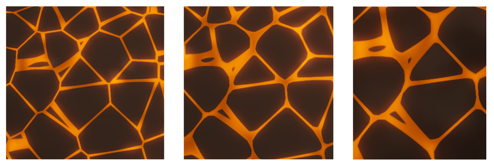
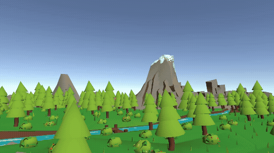

3D Rendering Project
Why
What
Unity URPHLSLC#Procedural NoiseWorld-space Masks
How
My contributions (Terrain Transformation)
- Procedural lava & cracks shader (HLSL): Built a terrain material that blends from normal ground to molten lava using 3D Worley noise for organic crack boundaries.
- Corner rounding for Worley junctions: Standard Worley borders can create sharp, unnatural corners at cell junctions. I used the third-nearest distance (F3) to compute a corner metric and widen cracks near junctions, producing rounded lava "veins."
- Surface micro-detail: Added controllable normal perturbation (Worley + Perlin-style noise) to avoid a flat/plastic feel and improve lighting response.

- World-space spherical reveal mask: Implemented a
smoothstep-based mask using distance-to-impact-center with radius + feather controls, then used that mask to lerp between the original terrain and lava shader outputs. - C# runtime control: Drove shader parameters every frame (center, radius, feather) using MaterialPropertyBlock so multiple objects can share a material while still receiving per-instance reveal behavior.
- Fade-out variant: Implemented a complementary transparent fade shader using the same world-space mask logic (useful for "clearing" geometry inside the shockwave region).

Outcomes
Team system context
- Procedural asteroid generation (vertex displacement + heightfield-driven normals)
- Velocity-reactive asteroid lighting (emission + Fresnel rim "burn")
- Impact frame post-processing (edge detection + radial blur + polar noise "speed lines")
- Shockwave bubble shader (depth intersection + Fresnel + heat distortion)
What worked well
- Readable, stylized “lava reveal”: The world-space mask + Worley cracks made the shockwave feel like it physically alters the terrain.
- More natural crack topology: Corner rounding reduced sharp triangular junctions common in basic Worley borders.
- Reusable control pattern: MaterialPropertyBlock-based driving is engine-friendly and scales to multiple affected surfaces.
Limitations & next steps
- The micro-normal detail was tricky to balance; in the final render we reduced the detail scale to avoid noisy lighting. Next, I’d tune a sharper normal pattern that still reads cleanly in motion.
- I’d also like to expose a small “art direction” panel (crack width, junction rounding strength, lava pulse speed) for faster iteration.